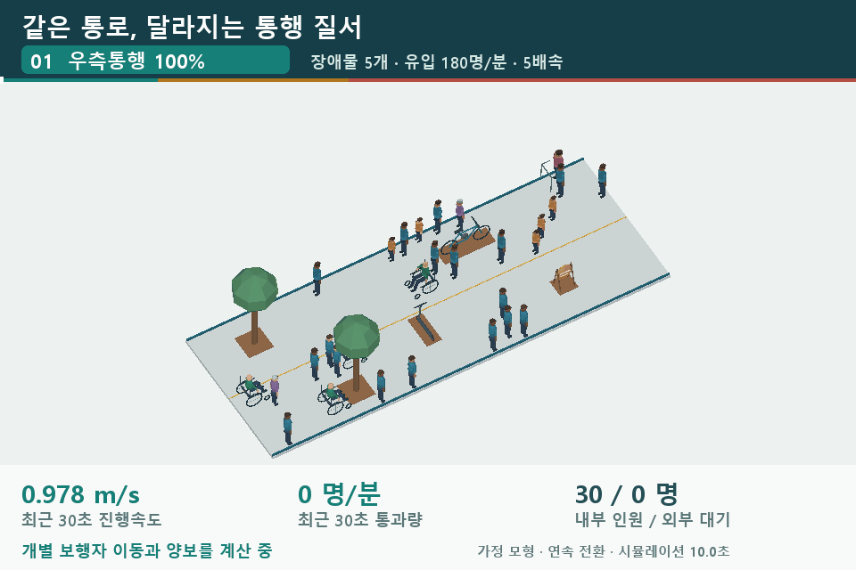

MICROSPACE / 3D EXPERIMENTS
작은 공간의 흐름을
사람의 시선으로.
같은 공간에서도 통행 규칙과 배치에 따라 이동 경험은 달라집니다.
인파의 속도·밀도·대기와 공간 설계 대안을 직접 살펴보세요.
보행 인파
장애물과 통행 방향·유입량에 따른 속도, 밀도, 병목을 실시간으로 비교합니다.
실험 열기 ↗02시내버스
만원 버스의 앞쪽 체류, 실내 분산, 반복 승하차와 현재 탑승 인원을 비교합니다.
실험 열기 ↗03엘리베이터
진입 방향과 목적층별 자리 안내가 하차·재탑승에 주는 차이를 비교합니다.
실험 열기 ↗04계단 배치
설치 공간 치수에 따른 U자·회전계단과 소수 이용자의 상·하행을 살펴봅니다.
실험 열기 ↗
홍보 GIF 재생 · 54초, 5배속
